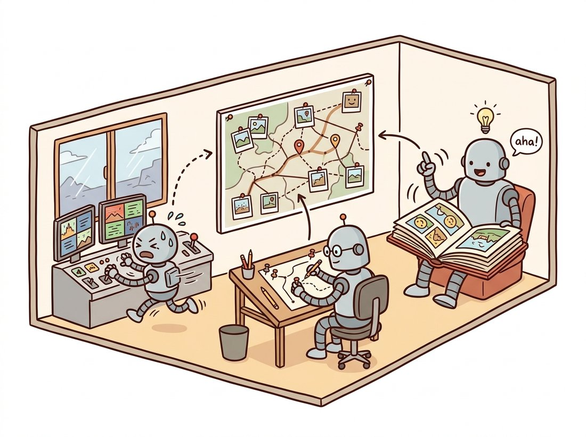
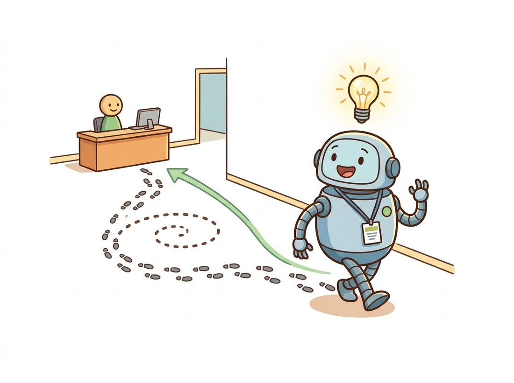

"Tourists get to reconstruct their vacation after they fly home. I have to know exactly where I am while the drone is still dodging the ceiling fan."
A Mildly Stressed SLAM System
Visual SLAM (Simultaneous Localization and Mapping) is structure from motion under a deadline: the same geometry as Sections 14.2 and 14.3, re-architected so a moving camera can localize itself, in milliseconds, against a map it is simultaneously building and correcting. The re-architecture has three pillars: keyframes (process the map at a fraction of the frame rate), parallel threads (fast tracking decoupled from slow mapping), and loop closure (recognize a previously visited place and cancel the drift accumulated since). The result runs robot vacuums, warehouse fleets, drones, and the inside-out tracking of every consumer VR headset.
Everything in this chapter so far was offline: all images available up front, minutes or hours of compute acceptable, and the answer delivered once, at the end. A robot inverts every assumption. Frames arrive one at a time and the camera's pose is needed now, within a frame budget of about 33 ms, because a controller is waiting on it; compute and memory are bounded forever, even as the trajectory grows without limit; and there is no second pass: decisions about the past must be revised live, as new evidence arrives. SLAM is the family of designs that meets these constraints, and visual SLAM is its camera-only branch. Remarkably, it concedes very little geometry: the front end is still feature matching from Chapter 10, pose estimation is still PnP, refinement is still bundle adjustment, only scheduled with extreme care about what gets computed when.
1. What the Deadline Changes Beginner
The first casualty of real time is the idea of treating every frame equally. At 30 fps, consecutive frames are nearly identical; reconstructing from all of them wastes compute on redundant views with near-zero baseline, the degenerate-motion trap of Section 14.2. The fix is the keyframe: a frame promoted to the permanent map only when it adds information, typically when tracking quality against the current map drops below a threshold or the view has translated enough since the last keyframe. Everything in between is localized against the map and discarded. The second casualty is the single computation loop, replaced by threads running at different rates. This architecture, introduced by PTAM in 2007 and matured by the ORB-SLAM line, is now standard; the illustration below pictures the three workers sharing one map, and Figure 14.4.1 shows the same structure as a block diagram.

The covisibility graph named inside the map deserves a word: it links keyframes that observe shared map points, generalizing the match graph of Section 14.1 to the online setting. Its role is locality. "The local map" that tracking matches against, and that local BA refines, is a neighborhood in this graph, not a radius in space, which is exactly right when trajectories cross themselves or hover in place.
2. A Minimal Visual Odometry Loop Intermediate
Strip SLAM of its map, keyframes, and loop closure and what remains is visual odometry (VO): chain relative poses frame to frame and integrate them into a trajectory. It is the natural first build, and its failure is the best motivation for everything SLAM adds. The loop below runs the two-view machinery of Chapter 13 on consecutive frames of a driving video (intrinsics here are from the KITTI benchmark's left camera) and composes the results.
import cv2
import numpy as np
K = np.array([[718.856, 0.0, 607.193], # KITTI sequence 00, left gray camera
[0.0, 718.856, 185.216],
[0.0, 0.0, 1.0]])
orb = cv2.ORB_create(3000)
bf = cv2.BFMatcher(cv2.NORM_HAMMING)
cap = cv2.VideoCapture("kitti00.mp4")
ok, frame = cap.read()
prev = cv2.cvtColor(frame, cv2.COLOR_BGR2GRAY)
kp_p, des_p = orb.detectAndCompute(prev, None)
pose = np.eye(4) # camera-to-world, starts at origin
trail = [pose[:3, 3].copy()]
while True:
ok, frame = cap.read()
if not ok:
break
gray = cv2.cvtColor(frame, cv2.COLOR_BGR2GRAY)
kp, des = orb.detectAndCompute(gray, None)
knn = bf.knnMatch(des_p, des, k=2)
good = [m for m, n in knn if m.distance < 0.8 * n.distance]
if len(good) >= 60: # else: skip frame, keep last pose
p0 = np.float32([kp_p[m.queryIdx].pt for m in good])
p1 = np.float32([kp[m.trainIdx].pt for m in good])
E, _ = cv2.findEssentialMat(p1, p0, cameraMatrix=K,
method=cv2.USAC_MAGSAC, threshold=1.0)
_, R, t, _ = cv2.recoverPose(E, p1, p0, K)
step = np.eye(4)
step[:3, :3], step[:3, 3] = R, t.ravel() # |t| = 1: scale unknown!
pose = pose @ step # compose into the global trajectory
trail.append(pose[:3, 3].copy())
kp_p, des_p = kp, des
trail = np.array(trail)
print(f"{len(trail)} poses, net displacement {np.linalg.norm(trail[-1]):.1f} units")
# 4541 poses, net displacement 18.3 units (ground truth: the loop returns to 0!)
Two structural flaws hide in this loop, and both are instructive. First, scale: recoverPose returns a unit-length translation every frame, because monocular geometry cannot know metric scale (Chapter 13's lesson). Real monocular systems estimate relative scale by triangulating landmarks and tracking them across multiple steps, yet even then scale slowly drifts, a distinctly monocular disease. Second, compounding: each frame's small rotation error rotates all future displacement; errors integrate, and the trajectory bends away from truth without bound. VO with map points and windowed optimization can slow the bleed. Only recognizing a previously seen place can stop it.
Visual odometry is the colleague who is confidently sure of every single turn and yet ends the conference hopelessly lost, because each tiny misjudgment compounds the next. The cure is not better turns; it is walking past the registration desk a second time and going "wait, I have been here." That flash of recognition, worth more than a thousand crisp frame-to-frame estimates, is loop closure, and the signature phrase to keep is blunt: local accuracy never cures global drift; only recognition does. The illustration below draws exactly this moment.

3. Loop Closure: Recognizing Where You Have Been Intermediate
Loop closure is two problems chained. Detection is image retrieval under a time budget: does the current keyframe look like any old keyframe? The classical solution embeds each keyframe as a bag-of-visual-words (BoW) vector over quantized binary descriptors (DBoW2 being the standard library), so candidate retrieval is an inverted-file lookup costing milliseconds even against thousands of keyframes; this is the same retrieval idea that Chapter 16 develops for recognition at large. Every candidate then faces geometric verification, a full relative-pose estimation with RANSAC, because perceptual aliasing (two identical corridors) makes appearance-only matches treacherous in exactly the way Section 14.1's doppelganger edges were.
Correction is the second problem: the verified loop says keyframe 980 sits, say, 0.4 m from keyframe 12, while the integrated chain claims 9 m. The error must be redistributed over the whole loop, and running full bundle adjustment over every keyframe and point is too slow for the moment of closure. The standard tool is pose-graph optimization: forget the points temporarily, keep only keyframe poses $T_i \in \mathrm{SE}(3)$ as variables ($\mathrm{SE}(3)$ is the set of rigid motions, a rotation paired with a translation, the same $[R \,|\, \mathbf{t}]$ extrinsics of Chapter 12 treated as a single object), with every odometry edge and the new loop edge contributing a measured relative pose $\hat{T}_{ij}$, and minimize
$$ \sum_{(i,j)} \left\lVert \mathrm{Log}\!\left( \hat{T}_{ij}^{-1} \, T_i^{-1} T_j \right) \right\rVert^2_{\Sigma_{ij}}, $$
where $\mathrm{Log}$ maps a pose error to a 6-vector (3 numbers of leftover rotation, 3 of leftover translation) and $\Sigma_{ij}$ weights each edge by its confidence. Read the summand plainly: $\hat{T}_{ij}^{-1} T_i^{-1} T_j$ is the gap between the relative pose the current poses imply and the one actually measured, so the objective simply asks every estimated pose to agree, as closely as possible, with each measured hop between keyframes. The optimization bends the trajectory smoothly so the loop meets itself, after which a background global BA re-polishes points and poses together. Monocular systems optimize over similarity transforms $\mathrm{Sim}(3)$ instead, with a 7th scale parameter per pose, so that accumulated scale drift is absorbed around the loop too. Figure 14.4.2 shows the before and after.
Every frame-to-frame estimate in the VO loop can be individually excellent and the trajectory still bends: drift lives in the accumulation, not in any step, so no amount of local polish (better matching, better PnP, more local BA) can remove it. The only cure is an independent, long-range measurement that contradicts the accumulated error, and recognizing a previously visited place is precisely such a measurement. This is why mature SLAM systems spend a startling fraction of their engineering not on geometry but on retrieval, and why "have I seen this before?" is, in mobile robotics, a question worth a whole research field.
4. Sensors: Monocular, Stereo, RGB-D, Inertial Intermediate
The sensor suite determines which of SLAM's diseases you contract. Monocular is the minimal deployment: no scale, scale drift, and fragile initialization, but any camera works. Stereo fixes scale outright, since the calibrated baseline of Chapter 13 makes every triangulation metric, and it initializes instantly from a single stereo pair. RGB-D sensors hand you per-pixel depth indoors, removing triangulation entirely from the critical path (their structured-light and time-of-flight ranging is sensor territory covered alongside Chapter 1's imaging pipeline). Visual-inertial systems (VIO) fuse an inertial measurement unit (IMU), whose accelerometer makes scale and gravity observable and whose high-rate gyro carries tracking through motion blur, fast rotation, and textureless moments that starve any pure camera system. VIO is why a phone-based AR session (ARKit, ARCore) keeps virtual furniture glued to your floor while you whip the phone around: the camera corrects the IMU's drift, the IMU bridges the camera's failures, and each sensor's weakness is the other's strength. Production systems like ORB-SLAM3 support all of these modes over the same keyframe-and-graph backbone.
Who: The autonomy team at a logistics-robotics company outfitting tote-carrying robots for a 40,000 square meter fulfillment center.
Situation: The incumbent navigation stack used 2D LiDAR, but the unit cost (several hundred dollars per robot, times a fleet of hundreds) pushed the company toward cameras: stereo pairs at a tenth the sensor cost.
Problem: Early camera-only trials failed in exactly the textbook ways: long, visually identical aisles caused perceptual aliasing (loop closures fired between different aisles, warping the map), and polished concrete floors plus motion blur during 2 m/s sprints starved the tracker of features several times per shift.
Decision: Stereo VIO rather than pure stereo (the IMU bridges blur and texture gaps); loop-closure candidates gated by a coarse position prior so an aisle-7 keyframe cannot match aisle 12; and a fleet-shared prior map built nightly by one surveying robot running full SLAM, with daytime robots doing cheap localization against it rather than full mapping.
Result: Position failures per robot-day dropped from 3.1 to 0.02 across the fleet; per-robot sensing cost fell 85 percent versus the LiDAR build; and the shared-map design cut tracking CPU enough to run on the robots' existing compute board.
Lesson: SLAM in production is rarely one robot heroically mapping alone. Separating slow, careful map building from fast, cheap localization, and constraining loop closure with whatever priors the deployment offers, converts a fragile research problem into boring, reliable infrastructure.
Our 40-line loop is odometry only: no map, no keyframes, no loop closure, and it drifts accordingly. Complete open-source systems package this entire section behind one entry point: ORB-SLAM3 (C++ with ROS bindings) and the actively maintained Stella-VSLAM (a community fork of OpenVSLAM, itself an independent reimplementation in the ORB-SLAM design lineage) both run monocular, stereo, or RGB-D SLAM from a configuration file and a video stream, in real time, with bag-of-words loop closure, pose-graph correction, full covisibility bookkeeping, and map save and reload. That replaces roughly 40,000 lines of hardened C++ you should not rewrite, and the practical integration effort drops to writing a camera-calibration YAML from Chapter 12. On the learned side, DROID-SLAM offers a Python demo that produces dense, drift-resistant trajectories from raw video on a GPU in a few commands.
The liveliest 2024-2026 question is what the map should be. Classical maps are sparse point clouds, useful for localizing, useless for much else. The new wave makes the map a renderable scene representation: SplaTAM (CVPR 2024) and MonoGS (CVPR 2024, best-paper honorable mention) track and map directly into 3D Gaussian splats, optimizing camera pose by differentiable rendering against incoming frames, so the SLAM by-product is a photorealistic reconstruction. MASt3R-SLAM (CVPR 2025) drops calibration requirements by building on two-view reconstruction priors, and DROID-SLAM's differentiable-bundle-adjustment lineage continues in faster descendants like DPV-SLAM (ECCV 2024). The common thread: the optimizer is still recognizably the bundle adjustment of Section 14.3, but the residual is photometric and the map is the renderable scene representation that Chapter 27 studies in depth, a convergence of SLAM and neural rendering that neither field predicted a decade ago.
Suppose you promote keyframes (a) every frame, (b) every 30th frame regardless of content, (c) adaptively, when tracked-point overlap with the last keyframe falls below 60 percent. For each policy, predict the consequences for: local BA cost, triangulation angles of new map points, robustness to a fast 90-degree turn, and map size after an hour. Which failure of (b) does the warehouse story's motion-blur problem make vivid, and why does (c) handle hovering in place better than both?
Run the VO listing on KITTI odometry sequence 00 (or any video that physically returns to its start). Plot the trajectory top-down. Quantify drift as final-position error divided by path length, then test two mitigations: keep only every 3rd frame (larger baselines), and tighten the MAGSAC threshold to 0.5 px. Report the drift rate for each variant and one sentence on why neither fix can drive it to zero.
A robot drives a square loop of four 10 m legs with four 90-degree turns, and each turn is measured 2 degrees too small. Compute the end-position error of raw odometry. Now write the pose-graph objective for the five poses (four odometry edges plus one loop edge measuring identity between end and start) and argue, without solving numerically, how the optimizer distributes the 8 degrees of angular error. What does the answer imply about where in a trajectory loop closures help most, and how does the $\mathrm{Sim}(3)$ variant change the story for a monocular robot whose scale also drifted 5 percent?